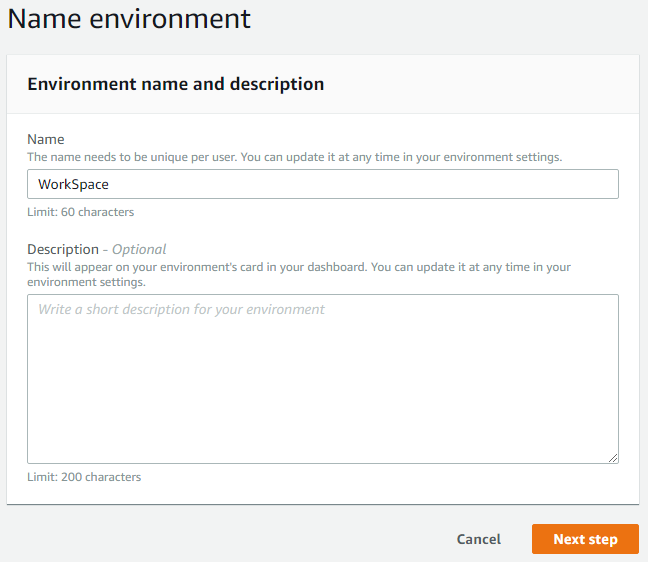
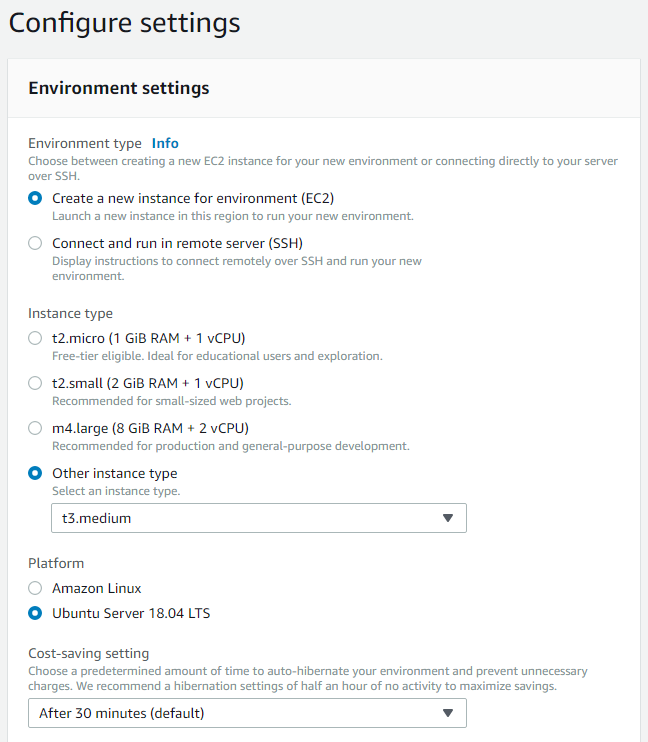
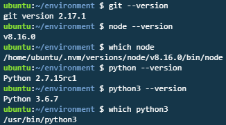

AWS Cloud9 사용해보기
클라우드 IDE인 Cloud9을 통해 언제 어디서나 웹 브라우저를 통해 내 환경에서 개발하는 방법을 알아보겠습니다.
1. 환경 만들기

- Cloud9 콘솔에 들어가서
Create environment를 클릭합니다.

- Name에 WorkSpace를 적고 Next Step을 클릭합니다.

- 각종 설정을 하고 다음으로 넘어갑니다.
Environment Type :
새로운 EC2를 만들 것인지 아니면 기존에 있던 서버에 Cloud9환경을 추가할지 선택합니다.
Cloud9은 무슨 새로운 패키지를 설치하는 것이 아니라.c9폴더에 Cloud9 환경 정보를 저장해 놓고 Cloud9에서 서버에 접속해 이 폴더를 사용하는 것 뿐입니다.
환경을 삭제하려면 단순히.c9폴더를 삭제하시면 됩니다.
저는 새로운 EC2를 만드려고 해서 위와 같은 옵션을 선택했습니다.Instance Type :
새로운 EC2의 인스턴스 타입을 선택합니다.
일반적으로 24시간 돌리는 서버와는 다르게 쓰는 만큼만 요금이 나가므로 비교적 비싼 타입을 선택하셔도 됩니다.Platform :
설치할 OS를 선택합니다. 저는 Ubuntu를 선택했습니다.Cost-saving setting :
Cloud9 웹 IDE 페이지를 종료한 후 몇 시간 후에 자동으로 EC2를 중지할 지 선택합니다.
최소 단위가 30분이고 저는 이 옵션을 선택했습니다.

- 앞서 설정한 옵션들을 검토하는 화면입니다. 별 문제 없으면 Create environment를 클릭해서 환경을 만듭니다.
2. 보안그룹 설정

보안 그룹 설정에 본인이 쓰실 포트를 추가해 주시면 됩니다.
싸지방은 포트가 80번과 443번밖에 안 뚫려있기 때문에 저는 80번과 443번을 추가했습니다.
3. Apache2 삭제

Cloud9을 켜신후 서버의 아이피 주소로 들어가 보시면 위와 같이 Apache2 페이지를 보실 수 있습니다.
자동으로 Apache2 웹 서버가 구동되어 있기 때문입니다. 저와 같이 Apache2를 쓰지 않으시는 분은 Apache2를 삭제 하셔서 80번 포트를 아무도 안 쓰게 해주셔야 합니다.
아래의 명령어를 입력해서 Apache2를 삭제합니다.
1 | sudo service apache2 stop |
다른 블로그 같은 곳에서 sudo apt autoremove를 하라는 곳도 있을 텐데 제 경험상 이 걸 하면 기본적으로 설치되어 있는 node가 고장났던 경험이 있습니다.
알아서 해보시길 바랍니다.
위의 명령어 만으로 Apache2가 삭제 되지만 완전히 모든 파일이 삭제되지는 않습니다.
만약 모든 파일을 삭제하시길 원하시면 아래와 같은 명령어로 삭제해 주시길 바랍니다.
1 | ubuntu:~/environment $ whereis apache2 |
4. 기본적으로 설치되어 있는 것들
아래는 기본적으로 설치되어 있는 패키지들 목록입니다.
제가 모르는 것이 더 있을 수 있습니다.

5. 간단한 노드 서버 만들어 보기
간단한 노드 서버를 만들어 보도록하겠습니다. 이 과정이 필요 없으신 분들은 건너 뛰셔도 됩니다.
기본적으로 환경 변수 PORT가 8080으로 설정되어 있어 환경 변수를 이용하는 코드를 쓰시는 분들은 주의해주시길 바랍니다. (아래의 명령어 참조)
1 | ubuntu:~/environment/node $ echo $PORT |
- index.js 파일을 만들고 아래와 같이 작성합니다.
1 | const http = require('http'); |
- 아래의 명령어를 통해 서버를 구동하고 서버의 아이피 주소를 이용하여 접속합니다.
1 | sudo node index.js |
6. 단축키
Ctrl + S
저장
Alt + W
에디터 탭 닫기
Alt + N
새 파일
Alt + T
새 터미널
주의사항 : Ctrl + W 는 에디터 창 닫기가 아니라 웹페이지 탭 닫기라서 Cloud9이 꺼져버립니다.
위의 모든 단축키는 설정에서 수정하실 수 있습니다.
7. 파일 업로드 & 다운로드
- 파일 업로드
- Cloud9 왼쪽에 뜨는 폴더 Hierarchy에서 원하시는 디렉토리에 드래그 앤 드롭하시면 됩니다.
- 또는 메뉴의
File - Upload Local Files...를 이용하시면 됩니다.
- 파일 다운로드
- Cloud9 왼쪽에 뜨는 폴더 Hierarchy에서 원하시는 파일을 마우스 오른쪽 클릭하시면 다운로드 됩니다.
AWS Cloud9 사용해보기